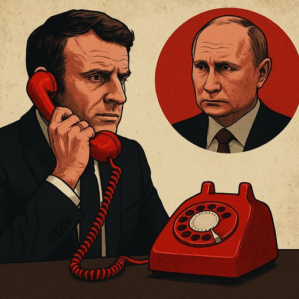

Publicado em 2025-07-01 21:48:31
Quando Emmanuel Macron decide, de novo, abrir canais de comunicação com Vladimir Putin, não está a fazer diplomacia — está a soprar vida para o corpo podre de um regime que se alimenta da divisão e da hesitação europeia.
Depois de anos em que o Ocidente, com Biden à frente, conseguiu finalmente isolar o Kremlin e expor ao mundo o monstro por trás do verniz diplomático, vemos agora a mesma Europa a estender a mão ao predador, esquecendo que ele continua de dentes afiados, território ocupado e sangue fresco nas mãos.
Falar com Putin hoje é o equivalente moral e estratégico de ter tentado negociar com Hitler em 1938. E sabemos bem como isso terminou: com tanques a atravessar fronteiras, cidades incendiadas e milhões de mortos. A política de apaziguamento revelou-se, então, **um erro fatal**.
Macron pode até vestir o manto de pacificador europeu, mas o que está a oferecer é **legitimidade a um criminoso de guerra**. E isso dá a Putin o que ele mais deseja: a ilusão de que tudo é reversível, de que a guerra é só um episódio “negociável” e que a Ucrânia é moeda de troca e não um país soberano.
“Putin não precisa de amizade. Precisa apenas de fissuras.”
— Análise Veritas
Com Trump a acenar dos bastidores com a sua velha simpatia pela autocracia russa, e agora Macron a desenterrar o velho cântico da diplomacia, quem começa a ficar isolada é a Ucrânia. Isolada, traída e deixada para trás, como a Checoslováquia de 1938.
A História pode não se repetir, mas rima com força. E se a Europa continuar a brincar ao equilíbrio com ditadores, o preço será pago pelos inocentes — outra vez.
Porque quando o Ocidente hesita, o tirano avança. E a memória curta é o campo fértil onde os pesadelos voltam a florescer.
Artigo de Francisco Gonçalves e a colaboração de Augustus Veritas :
“O totalitarismo não visa apenas o domínio externo dos seres humanos, mas tenta controlar e possuir o próprio espírito humano.”
— Hannah Arendt
“O mais terrível é que a maioria dos homens não são nem maus nem especialmente bons, mas estão aterradoramente dispostos a aceitar qualquer coisa.”
— Hannah Arendt